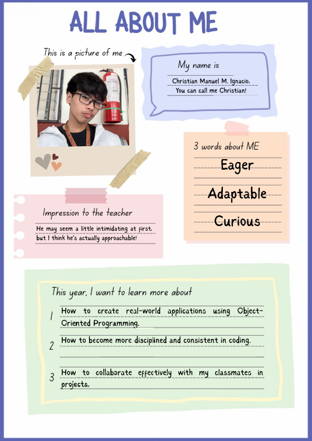
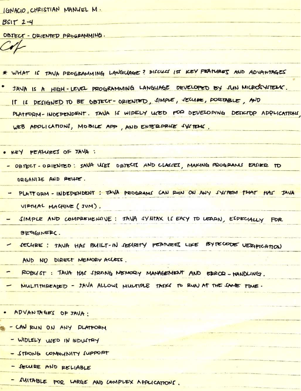
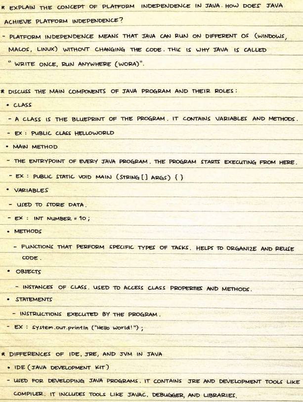
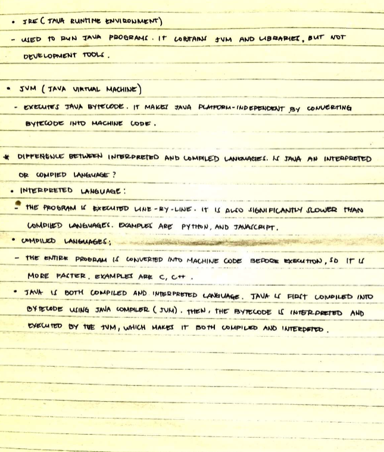

Initial assignments establishing foundational knowledge in Java and Object-Oriented Programming.
Description: An introductory assignment to share personal background, interests, and goals for the Object-Oriented Programming course.

Writing this assignment was a fun way to start the subject. It made me realize why I chose IT and what my goals are for this OOP class. I'm actually a bit nervous because programming can be hard, but I'm excited to learn Java since I hear it's used everywhere. I hope I can get good at it by the end of the semester.
Description: Research and explanation of Java's core features, history, and why it is widely used in Object-Oriented Programming.



Before this, I didn't really know what Java was besides the logo I used to see on my old phone. Doing this research helped me understand that Java is an object-oriented language. The whole "Write Once, Run Anywhere" concept blew my mind a little bit because it means we don't have to rewrite code for different devices. It's a bit overwhelming with all the new terms like JVM and bytecodes, but I think I'm starting to get the big picture.